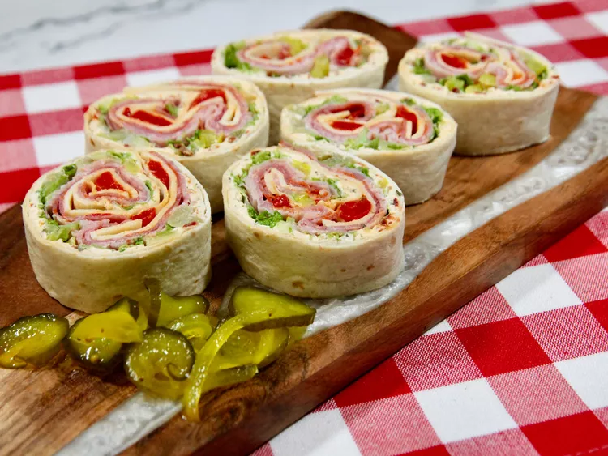

Pinwheels Recepy

Description
Pinwheels are a must-have at holiday parties.
This recipe is easy to make and delicious.
Ingredients
- 2 (8 ounce) packages cream cheese, softened
- 1 (1 ounce) package ranch dressing mix
- 2 green onions, minced
- 4 (12 inch) flour tortillas
- ½ cup shredded Cheddar cheese
- ½ cup red bell pepper, diced
- ½ cup diced celery
Steps
- Gather all ingredients.
- Mix together cream cheese, ranch dressing mix,
and green onions in a medium bowl until combined.
- Spread onto each tortilla. Sprinkle evenly with cheese,
red pepper, celery, and olives.
- Roll up tortillas, then wrap each one tightly in aluminum foil.
- Chill in the refrigerator, 2 hours to overnight.
- To serve, unwrap each rolled tortilla; trim ends and slice
into 1-inch pieces.